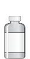
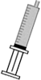

500 UI/20 ml de solvant.Conservation au froid a l’abri de la lumière.Produit dérivé du sang, traçabilité de prescription et d’administration obligatoire.
FAMILLE :
Antihémorragique, facteurs de coagulation II, VII, IX et X.
DÉLAI D’ACTION :
Immédiat.
DURÉE D’ACTION :
Normalisation de l’hémostase 10 minutes après la fin du traitement. Demi-vie de 60 heures pour le Facteur II.
INCOMPATIBILITÉ PHYSICO-CHIMIQUE :
Ne pas mélanger à d’autres drogues.
PRÉPARATION ET DILUTION :
SOLVANT, EPPI.
PSE :
Prélever la quantité d’Octaplex souhaitée en suivant le tableau des posologies ci contre.


Dissoudre le lyophilisat avec les 20 ml de solvant
Ramener la quantité souhaitée dans une ou plusieurs seringues de 50 ml
La concentration finale doit être 500 UI/ 20 ml soit 25 UI/ml
Administration a la vitesse de 1 ml/ minute pour la premiere seringue puis 2-3 ml/ minute pour les seringues suivantes.
Ne pas faire de reflux sanguin sur la ligne de perfusion.
POSOLOGIE :
La posologie est liée à l’INR initial et au poids du patient.
INR Initial
2 - 2,5
2,5 - 3
3 - 3,5
> 3,5
Dose (ml Octaplex/ Kg)
0,9-1,3 ml/kg
1,3-1,6 ml/Kg
1,6-1,9 ml/Kg
>1,9 ml/Kg
50 Kg
45-65ml ou 3 Flac
65-80ml ou 4 Flac
80-95ml ou 4 Flac
95-120ml ou 5-6 Flac
60 Kg
54-78ml ou 3 Flac
78-96ml ou 4 Flac
96-114ml ou 5 Flac
114-120ml ou 5-6 Flac
70 Kg
63-91ml ou 3-4 Flac
91-112ml ou 5 Flac
112-120ml ou 6 Flac
120ml ou 6 Flac
80 Kg
72-104ml ou 4-5 Flac
104-120ml ou 5-6 Flac
120 ml ou 6 Flac
120ml ou 6 Flac
90 Kg
81-117ml ou 5 Flac
117-120ml ou 5-6 Flac
120ml ou 6 Flac
120ml ou 6 Flac
100 Kg
90-120ml ou 5-6 Flac
120ml ou 6 Flac
120ml ou 6 Flac
120ml ou 6 Flac
EFFETS SECONDAIRES ET SURVEILLANCES :
Monitorage.
Affection du système immunitaire se manifestant par une réponse clinique insuffisante.
Des réactions allergiques ou de type anaphylactoïdes ainsi que des hyperthermies peuvent survenir de façon rare.
Des maux de tête ainsi qu’une élévation transitoire des transaminases ont été observées de façon rare.
Il y a un risque de complications thromboemboliques après administration de facteur VII de coagulation humain.
CIVD et coagulopathie.
Le contrôle du bilan de coagulation peut être effectué à 30 minutes.